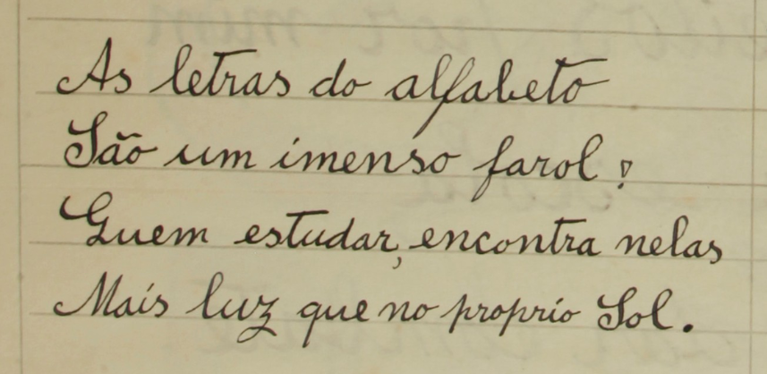

Joaquim Moreira da Silva
Poeta Carpinteiro
Joaquim Moreira da Silva, carpinteiro de profissão, tem uma extensa obra poética, que o tornou conhecido por Poeta Carpinteiro, um poeta "que sabe de carpintaria poética, e merece ser lido e lembrado" (Arnaldo Saraiva). Com uma vida dura de pobreza e de trabalho, essa obra é marcada por grande talento poético e pelas suas convicções na luta por uma vida melhor.

O poeta aos 36 anos
(retocada digitalmente)
Nascimento
15 de Março de 1886
Vilar, Vila do Conde
Profissão
Carpinteiro
Poeta por vocação
Conhecido por
Poeta Carpinteiro
"Moreira Cego"
Falecimento
12 de Dezembro de 1960
Vilar, Vila do Conde
Biografia
Aos 7 anos, sem nunca ter podido frequentar a escola, Joaquim Moreira da Silva começou a trabalhar como moço de lavoura. Ainda criança cegou de um olho num acidente com uma foicinha, o que lhe valeu a alcunha de Moreira Cego, apesar de manter a visão do outro olho.
Aos 18 anos Moreira da Silva aprendeu a arte de carpinteiro no Porto, para onde se deslocava diariamente de comboio, e onde aprendeu a ler e a escrever num curso noturno. Nascia o Poeta Carpinteiro, que podia agora registar por escrito a sua poesia. O curso da sua vida mudou radicalmente, com o acesso à leitura e escrita, e o contacto com as lutas operárias e a ideologia anarquista.
A leitura das "obras dos grandes sábios" trouxe-lhe vasta cultura geral e política, e uma melhor compreensão do mundo, enformada também pelo contacto com os trabalhadores e as suas lutas. Sedento de justiça e com um espírito lutador, com as suas ações e com os seus versos não mais deixou de denunciar as injustiças e de lutar contra elas.
No final dos seus dias de trabalho, na sua própria casa, em Vilar, Joaquim Moreira da Silva, ocupava os serões ensinando os conterrâneos a ler a escrever. Criou mesmo um método de leitura, que publicou num folheto de cordel, e editou alguns outros folhetos didáticos.
Aos 23 anos casou com a camponesa Maria Rosa Marques. O primeiro filho do casal morreu com apenas 5 meses. O segundo, Alberto Moreira, tipógrafo de profissão e amante de literatura, editou várias obras do seu pai. Moreira da Silva teve três netas, que, com a sua esposa, ajudou a criar por terem ficado órfãs de mãe muito cedo.
Joaquim Moreira da Silva morreu em 12 de dezembro de 1960, com 74 anos. O caixão foi coberto com a bandeira da Associação Cultural e Recreativa Honra e Dever de Vilar, para a qual escrevera o hino. A sua morte foi noticiada em vários jornais: O Comércio do Porto, A República, O Século e O Norte Desportivo.
Obra
Características Formais
As estruturas versificatórias correspondem às que caracterizam a poesia popular portuguesa: predominância de quadras ou sextilhas, rima cruzada e versos de sete sílabas. Há vários poemas de mote em que uma quadra é glosada em quatro décimas. A linguagem é muito simples, recorrendo frequentemente a plebeísmos, provérbios ou frases feitas.
Classificação Temática
- Crítica social
- Temas anticlericais
- Louvações
- Histórias sentimentais
- Temas históricos e políticos
- Desafios
- Mundos fantasiosos
- Obras didáticas
- Lendas
- Autobiografia
- Hinos
Circulação e Distribuição
Enquanto Moreira da Silva não aprendeu a escrever, os seus versos circulavam apenas oralmente. A partir daí, muitos foram editados em pequenos folhetos de cordel ou em folhas volantes. Estas publicações eram vendidas às pessoas conhecidas e a quem as procurava, ou em locais de maior circulação.
Relevância da Obra
"Foi ao longo da sua vida, tão pobre como sobressaltada, um poeta da causa social. Não poucas vezes alguns belos ritmos lhe desceram da pena para as muitas páginas que escreveu."
"Moreira Cego, que com António Aleixo, Manuel Alves e outros poucos domina a poesia popular portuguesa do século, tem um sentido muito vincado do narrativo."
"O poeta-carpinteiro, por vezes ingénuo e por vezes utópico, frequentemente moralista e frequentemente irónico, é quase sempre um poeta inspirado."
"Uma obra em que alguns de nós talvez vejam apenas o que fomos como povo, mas em que outros tantos verão aquilo que nos define como humanos."
Manuscrito Original

Livros Publicados Postumamente

A lira do povo
Seleção e Organização: Alberto Moreira.
1967 - Porto - Tipografia do Carvalhido

Poetas populares Volume 2 (1ª ed.)
1977 - Lisboa: Edições Portugalmundo.
ISBN: 9789729288166

Antologia poética
Seleção e Organização: Armanda Zenhas.
1987 - Câmara Municipal de Vila do Conde

Poesias
Seleção e Organização: Armanda Zenhas.
1998 - Câmara Municipal de Vila do Conde

A lira dileta e A lira da rebeldia
Seleção e Organização: Armanda Zenhas.
2024 - Opera Omnia.
ISBN: 9789899192034
Intervenção Política e Social
Joaquim Moreira da Silva era um homem conhecido por ser justo, bom, altruísta, combativo e corajoso. Abraçou a ideologia anarquista e anticlerical, que marcou a sua obra e as suas ações.
Lutou contra todas as injustiças, participando em lutas operárias, liderando ações de protesto, escrevendo poemas de denúncia. Por ocasião da I Guerra, liderou o assalto popular às tulhas de um lavrador, pretendendo levar o milho ao preço tabelado.
Sofreu perseguições da justiça e dos poderosos, foi preso e chegou a estar sem trabalho, mas manteve sempre a sua integridade.
Das minhas ações e obras,
Pra mim a maior vantagem,
É ter sido um moralista,
Ter audácia e ter coragem;
Marcando bem sem desdouro
No mundo a minha passagem.
Paixão pela Educação
Joaquim Moreira da Silva é uma figura singular da cultura popular e da história da educação. Operário e poeta, viveu numa época — o século XIX — em que o analfabetismo era ainda muito comum entre as classes trabalhadoras. Tendo aprendido a ler e a escrever em escolas noturnas, frequentadas por trabalhadores que procuravam instrução depois de longas jornadas de trabalho, compreendeu a importância libertadora do conhecimento que o marcou profundamente.
Na sua oficina, ele mesmo organizou uma pequena escola na aldeia. O seu ideal aproximava-se do movimento pedagógico progressista da época, inspirado por pensadores como o catalão anarquista Francisco Ferrer, fundador da Escola Moderna, que defendia uma educação racional, livre e acessível a todos.
Reflexões e Versos
Entre os seus textos encontram-se reflexões e versos que exaltam o valor da escola, do conhecimento e do trabalho.
A sua obra revela também uma visão muito moderna da educação como processo contínuo, defendendo aquilo que hoje chamamos educação ao longo da vida.


